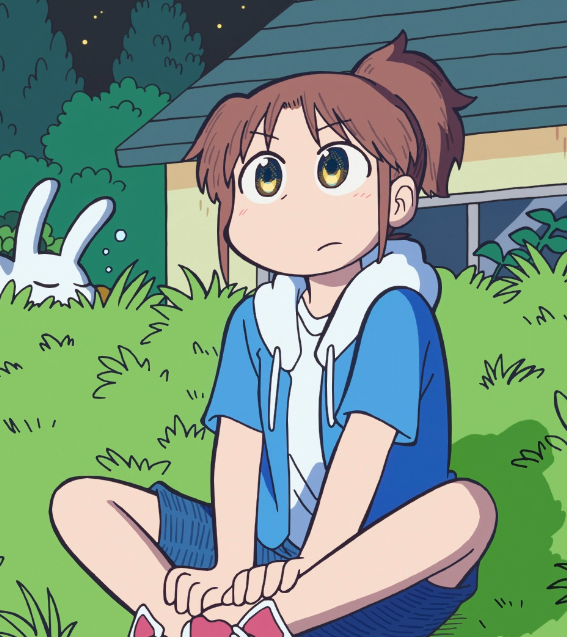
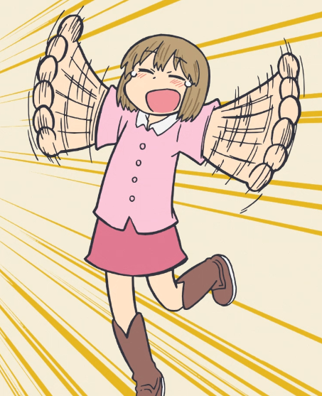
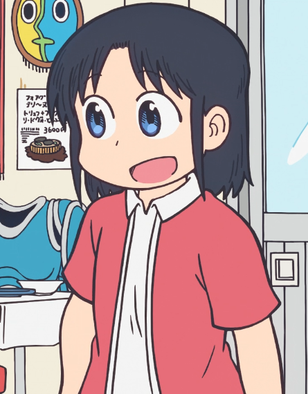

This is the story of a City that has nothing to do with that bird.


CITY! The Website!
I hope you liked the little intro, I tried to mix scenes from the show into the format of the manga; I think it came out quite nice! (this may or may not have been an excuse to learn how to use DaVinci Resolve loll)
CITY has only been something I've been aware of for a few months, and I only finished watching it last month (still reading the manga, they're very pricey so I'm taking my time). Despite this, I've absolutely fallen in love with this city and its residents <33. This page is just a place for me to talk about it, and the emphasis that the anime puts on the animation really made me think that a website is a great medium to show this anime off!
ps: This page is gonna be |work in progress| for a few weeks while I work out content/formatting/media so dont be suprised if this page changes a bit!
The Cast
(featuring a very accurate and canon map)

The Mont Blanc Uni Students
Midori Nagumo

The "protagonist" of the show! errm filler text here please and thank you! I'm kind of in love with how much she cares about the restaurant by the end of summer
Michael J. Niikura

Niikura usually plays the straight man (ironic) to Nagumo and Wako's antics, although she's still a little silly in her solo stories <3
Wako Izumi

My fav <3333 Shes always up to some kind of shenanigan and I love her for it, I will never forgive the show for cutting so many of her scenes